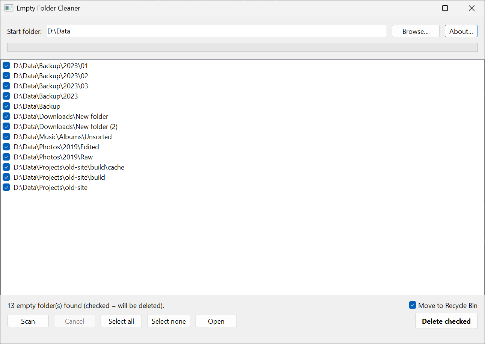

$ empty-folder-cleaner
Find and delete empty folders on Windows.
Scans a folder tree and lists every empty folder – including folders that only contain other empty folders. Send them to the Recycle Bin with one click, or delete them permanently if you prefer.

$ cat features
- background scan, can be cancelled
- Recycle Bin by default, permanent delete optional
- deepest folders first, each checked again right before deletion
- warns before scanning drive roots and system folders
- never follows junctions; hidden files count as content
- long paths (> 260 characters), Unicode names, high DPI
$ cat notes
Use the 64-bit version on 64-bit Windows; the 32-bit build is for 32-bit systems such as Windows 7 x86.
The .exe is not code-signed, so Windows SmartScreen may warn on first start – choose “More info” → “Run anyway”. Checksums are listed on the release page.